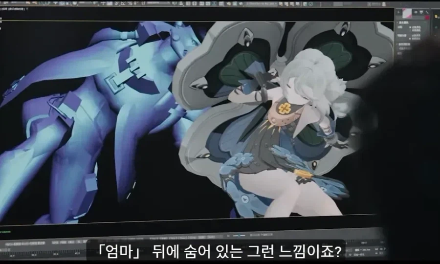
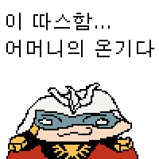

공식이 인정하는 엄마.
스토리에 뜬금없이 등장한 낳아준 엄마.

키워준 엄마.
갑자기 엄마만 한 업데이트에 세 명이나 등장시키는 젠레스 존 제로.

공식이 인정하는 엄마.
스토리에 뜬금없이 등장한 낳아준 엄마.
키워준 엄마.
갑자기 엄마만 한 업데이트에 세 명이나 등장시키는 젠레스 존 제로.
낳아준 엄마 키워준 엄마 지켜주는 엄마 ㅋㅋㅋㅋㅋㅋㅋㅋㅋㅋㅋㅋㅋㅋㅋㅋㅋㅋㅋㅋㅋㅋㅋㅋㅋ 지랄났네 ㅋㅋㅋㅋㅋㅋㅋㅋㅋㅋㅋㅋㅋㅋㅋㅋㅋㅋㅋㅋㅋㅋㅋㅋㅋㅋ
엄삼당은 신이났어요.
아빠는 누구야
나여
엄마가 셋이라 좋으시겠어요
마마익선
드라케나는 내 아내임
넌 내 아빠임
친엄마가 있었어??
어머니가 계셨구나?
애미가 셋이라서 좋겠네요?
여포임?
그러네 엄마가 셋이네
가면라이더의 애비 셋과 견줄만 하군
엄마는 많을 수록 좋다
뭐지요
저건 뭐라고 부름? 역고아?
엄마장자
포여
역포

그리고 콜라보하면서 옆집 엄마도 데려옴
젠레스 존 제로 지금 당장 사전예약!!!

그럼 아빠가 텐겐임?
조조 급히 달려오다
엄마가 셋이라 좋으시겠어요 콘

카프카 마망도 데려옴
마마마 ㄷㄷ
여포 TS